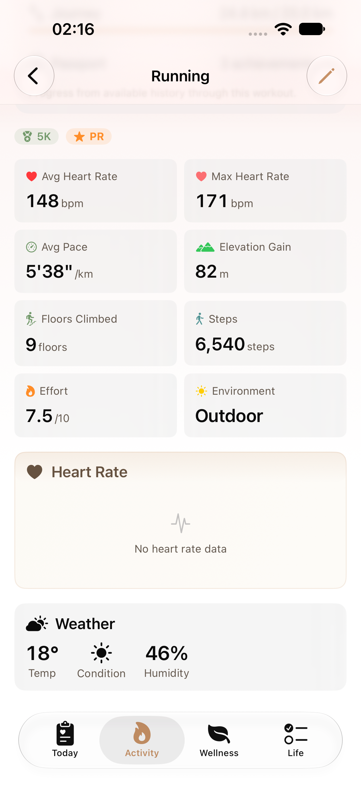
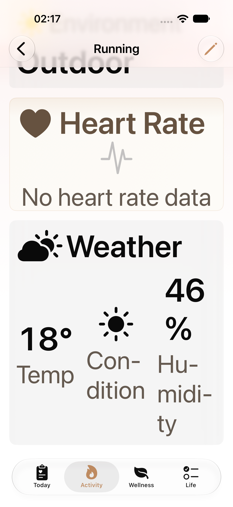
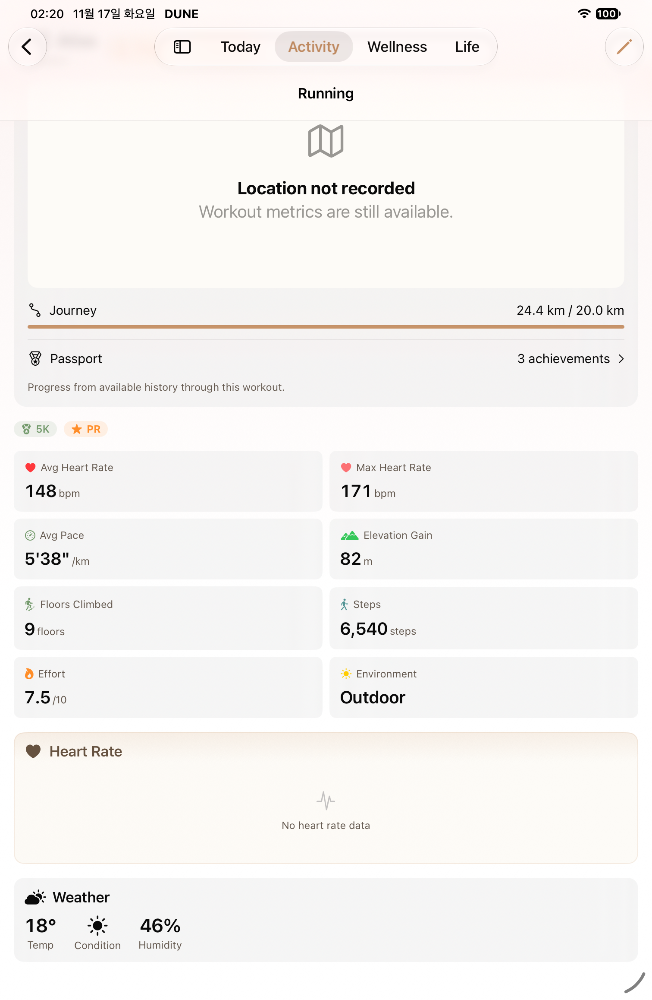

iphone normal

2026-11-17 새 XCTest 원본 PNG·AX. iPhone 일반/최대 글씨 2/2, iPad 일반 글씨 1/1 통과. iPhone 마지막 Weather 카드와 시스템 탭 바의 실제 frame 간격은 두 글씨 크기 모두 24pt. iPad는 상단 탭 바이며 마지막 카드가 화면 안에 표시된다.
seeded 알림에서 운동 상세를 push했다. 이 fixture는 심박 샘플이 없어 마지막 카드가 Weather다. 날씨 없는 마지막 심박 구간 카드·Duo 접힘/펼침·iPad 최대 글씨·어두운 모드는 새로 캡처하지 않았다. 기존 최대 글씨 Weather 줄바꿈은 이번 여백 수정의 범위 밖이다. 시안이나 실사용자 HealthKit 화면이 아니다.
기기·시각·소스 해시·원본 출처 · iPhone receipt · iPad receipt


